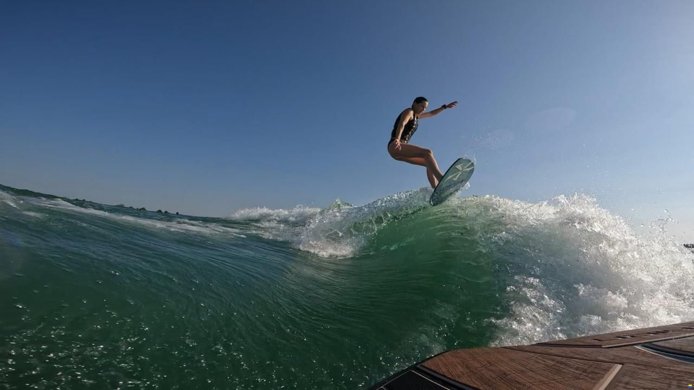

My favorite way to spend a summer day — Tanner Nelson
Wakesurfing is a water sport where you ride the wake behind a boat on a small surf-style board — no bindings, and after you get up, no rope. The boat is weighted with ballast so one side throws a big, clean, endless wave, and once you find the sweet spot (“the pocket”) you can literally throw the rope back into the boat and surf the wave for as long as your legs hold out.
I love it because it is low-impact compared to wakeboarding, anyone can learn it in an afternoon, and there is nothing better than being on the lake with family and friends — especially on a warm Utah evening at places like Utah Lake or Deer Creek.

A rider carving the pocket behind the boat. Photo: boat24.com listing photo, used for this class project.
Beginner tip that helped me most: look at the back of the boat, not down at your feet. Your body follows your eyes — stare at the board and you will fall off the board.
This video walks through the same four-step process I used when I learned:
Wakesurfing is my summer sport, but I stay busy year-round. In the warmer months I also love golfing (I even built the golf round tracker on my web app page) and dirtbiking in the Utah foothills. When the snow comes, it’s snowboarding season.
I’m also a huge sports fan: I follow all things BYU sports (go Cougars!), the San Francisco 49ers in the NFL, and the Utah Jazz in the NBA.